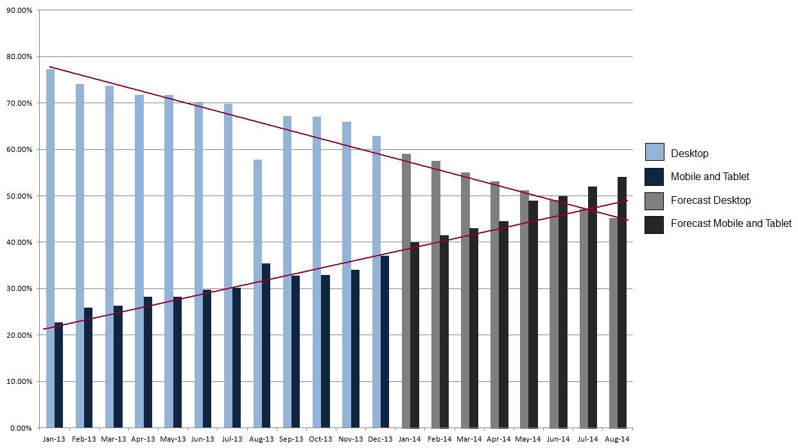
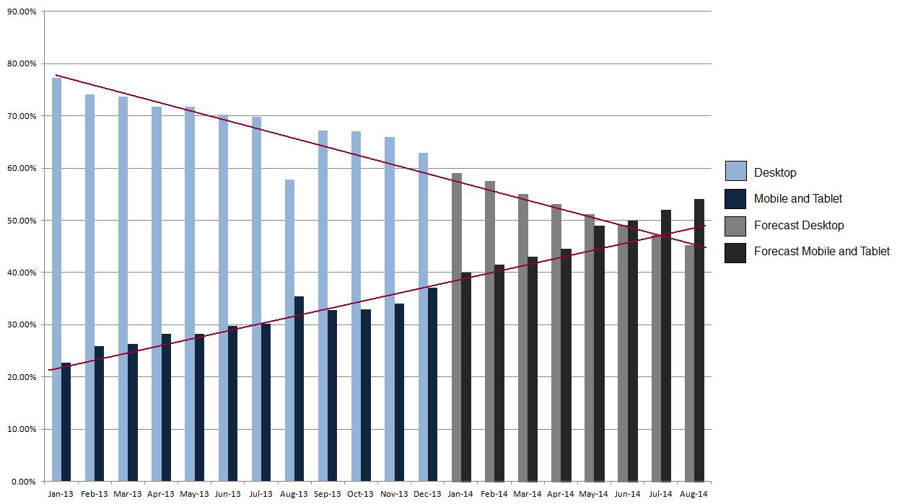
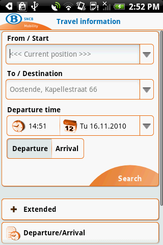

Responsive Webdesign
use the arrow keys to navigate; press space for slide overviewResponsive Webdesign
About
Definition
Responsive design aims at providing an optimal viewing experience across a wide range of screen resolutions and devices with a single site, codebase and content.
How is mobile doing? (1)
- In 2014, mobile traffic was expected to surpass desktop traffic:
 

How is mobile doing? (2)
-
Observations:
- mobile seems to stabilize or even have reached its peak (worldwide; other charts for Europe, Africa, Asia, North-America and Belgium)
- developing countries are more developed mobilewise
- is the tablet hype over?
{kind=link}
{kind=link}
{kind=link}
{kind=link}
{kind=link}
How is mobile doing? (3)
- Still, mobile usage hovers around 40%
- Also for e-commerce it is big business:
Responsive webdesign (1)
- Responsive webdesign = a single site that adjusts ('responds') optimally to every screen width

- other examples: demorgen.be, theguardian.com, apartmentbruno.be, architec.be
Responsive webdesign (2)
-
Transition effects on elements (textboxes, graphics, fonts...) between screen sizes is called content choreography:
- stretching / compressing elements → flexibility
- reordering elements → fluidity
- omitting / adding elements
- changing elements
- ...
- Basically whatever floats your boat
Responsive ≠ mobile only! (1)
- Optimized for all screen sizes means optimized for all screen sizes, not for mobile only
- A hamburger menu on a 1920x1080 screen is ridiculous:

Responsive ≠ mobile only! (2)
- Stretching your content 1920px wide is ridiculous too:

Alternative: an app (1)

Alternative: an app (2)
-
Apps are great!
- easy to download and install
- work well offline
- have direct hardware access (GPS, camera, accelerometer...)
- have good visibility in app stores
-
But for a regular websites building an app is quite silly:
- seperate versions needed for Android, iOS, Windows...
- hard and expensive to develop and maintain
- customers simply do not download and install websites
Alternative: mobile version (1)

Alternative: mobile version (2)
-
A separate mobile version: sounds like a plan!
- optimized design and content
- bandwidth-friendly
- take advantage of mobile features like geolocation, QR-scanning etc...
-
But maybe the idea is not so great after all:
- different links: which one should you share with others?
- developing and maintaining two separate versions is costly
- design: still optimized for just two versions... what about tablets? large smartphones? netbooks?
- bandwidth: should a smartphone on Wifi use the light mobile or the full desktop version? and a tablet on 3G?
- mobile: is a smartphone at home considered 'mobile' or 'desktop'? what about a laptop in a public area?
Responsive Webdesign
Responsive in 7 easy steps
Basic principles
-
Technically, responsive design comes down to
- em/rem units
- flexible and fluid layout
- flexible media (images, video)
- media queries
7 Steps
-
The steps to convert a fixed-width to a responsive page are:
- use em/rem units
- make the page flexible and fluid
- decide on a breakpoint
- create a small version of the page
- add media queries
- add the viewport metatag
- optional: add more breakpoints
1. use em/rem units
- We've actually done this throughout the course:
-
/* set default font size to 16px * 0.625 = 10px */ html { font-size: 0.625em; } /* from now on 10px = 1rem */ body { font-size: 1.3rem; /* 13px, or whatever default font size you like */ } body > header { background-color: #000; padding-top: 2rem; /* 20px */ padding-bottom: 0.8rem; /* 8px */ } ... - doublecheck your CSS if everything is done right
You may still use pixels in some occasions, like 1px borders.
2. make flexible and fluid (1)
-
The next step is making the layout grid flexible, so that it feels elastic when browser window resizes. Basic principles:
- define
min-widthandmax-widthfor wrappers - don't use
heightand use%forwidthfor flexible elements
- define
-
We'll also make it fluid, so that elements can float to the next line for small browsers. Basic principle:
- don't use absolute/relative positioning, use floats/margins instead
- we'll look into this with some code examples
2. make flexible and fluid (2)
-
A. define
min-widthandmax-widthfor wrappers instead ofwidth:.wrapper {width: 96rem;max-width: 96rem; min-width: 32rem; }
2. make flexible and fluid (3)
- B. remove
heightand use%forwidthon flexible elements (header, columns, images...):header {height: 25rem;} .leftcol {width: 64rem;width: 66.66%; } .rightcol {width: 32rem;width: 33.33%; } .rightcol img {width: 32rem;height: 18rem;width: 100%; }
2. make flexible and fluid (4)
- replace absolute/relative positioning by floats/margins:
header #logo {position: absolute;top: 2rem;left: 1rem;margin-top: 2rem; margin-left: 1rem; float: left; } header #login {position: absolute;top: 2rem;rigt: 1rem;margin-top: 2rem; margin-right: 1rem; float: right; }
3. decide breakpoint
-
A breakpoint is the browser width where the CSS transition between large and small version will occur. Deciding on a breakpoint is easy:
- open your page in the browser
- make your browser window smaller (it should already be flexible and fluid)
- the width where your design breaks is your breakpoint
- You'll find many 'recommended' breakpoints on the Internet (800px, 480px etc...), but this is nonsense: pick whatever value that fits your design.

4. create small page version
-
Your next task is to create the CSS for the smallest version you'll design for (e.g. 320px). A possible workflow:
- create a copy of the current CSS
- set your browser width to 320px
- adjust the CSS
- Remember that the HTML for the large and small versions should be identical. HTML changes you need for the small version should not break the original version.
5. add media queries (1)
- We now have a large and small CSS version of the page, flexible and fluid.
-
We'll start from the small CSS, and add media queries for larger screens. Add the following CSS to the bottom:
... /* =============== Media queries =============== */ @media (min-width: 50em) { /* your breakpoint in em here */ /* your media queries here */ }styles_small.css
An alternative is to start from the large CSS file and add media queries to adapt for smaller screens. As the large CSS is usually larger and more complex than the small CSS, it is better to start from the small CSS and work your way up. This will lead to less complex CSS.
Also, note that the breakpoint is defined in em instead of rem. Media queries have no 'root' and thus no rem. Simply devide your breakpoint in px by 16, e.g. 800px / 16px = 50em
5. add media queries (2)
-
The rest is easy: insert media queries to adjust for larger screens
- styles unique to large version: insert in media query
- conflicting styles: overwrite in media query
- styles unique for the small version: reset to default in media query
5.add media queries (3)
-
example CSS files:
a { color: #333; } .box { padding: 0 2em; background-color: #fff; margin-bottom: 1em; }styles_small.cssa { color: #333; } .box { padding: 0 0 1em 0; float: left; background-color: #fff; }styles_large.css
5. add media queries (4)
-
the resulting responsive CSS:
a { color: #333; } .box { background-color: #fff; padding: 0 2em; margin-bottom: 1em; } @media (min-width: 50em) { .box { float: left; /* added style */ padding: 0 0 1em 0; /* overwritten style */ margin-bottom: 0; /* style reset to default */ } }styles_responsive.css
6. add viewport metatag
-
Finally, you have to let your mobile device know that your site is responsive, so that it does not try to scale and fit the large version. This is simply done by adding this to the HTML:
<meta name="viewport" content="width=device-width, initial-scale=1.0" /> -
You'll also come across this version, but it does not allow the user to zoom in:
<meta name="viewport" content="width=device-width, minimum-scale=1.0, maximum-scale=1.0" />
7. add more breakpoints
-
This step is optional. As you start feeling comfortable with media queries, you may want to add more more breakpoints to enhance your 'content choreography'. Follow the same pattern: start with the smallest version, and work your way up:
... @media (min-width: 20em) { } @media (min-width: 31em) { } @media (min-width: 49em) { } - for a stepwise example, see this demo
It may be tempting to define areas like this:
@media (max-width: 20em) {
}
@media (min-width: 20em) and (max-width: 50em) {
}
@media (min-width: 50em) {
}Final notes (1)
-
Resizing images and videos in the browser isn't bandwidth friendly; it would be better to deliver a device-dependent size. A W3C group is working on a proper solution:
<picture alt="A giant stone face at The Bayon temple in Cambodia"> <source src="small.jpg"> <source src="medium.jpg" media="(min-width: 400px)"> <source src="large.jpg" media="(min-width: 800px)"> <noscript><img src="small.jpg" alt="..."></noscript> </picture> - This would be nice: you could even deliver different versions or aspect ratios (e.g. square vs. rectangular) to different devices
- The proposal is not yet complete: bandwidth is ignored and support is absent
- Javascript solutions exist, but we'll stick to rescaling for now.
Final notes (2)
-
More problems remain to be solved:
- some elements like tables and graphs don't do well with responsive design
- no proper bandwidth-friendly solution for adaptive content exists either — hiding an aside for smaller devices for example
- many Javascript widgets like slideshows, scrollviews etc... are not responsive yet, although the situation is improving
- even with these problems, responsive is the best way to provide a good experience across a broad audience today